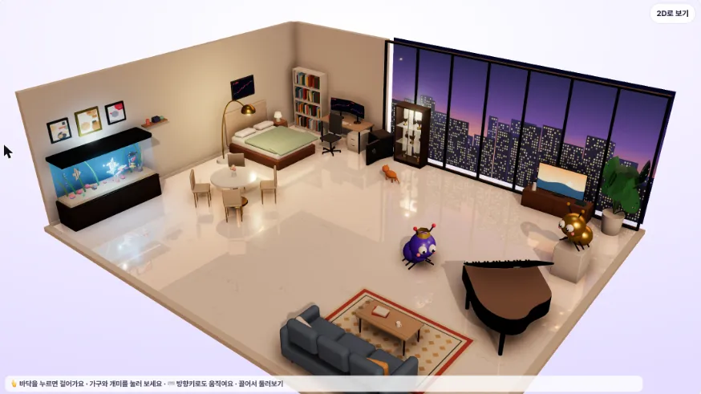

금융빅데이터분석실습 · 기말 최종 발표 · 2조
그때로 돌아가면,
부자 될 수 있을까?
타임슬립 개미
1,000만 원과 폰 하나로
실제로 있었던 시장의 12주를 다시 산다.
 📺 유튜버 47명이 라이벌
🔒 AI도 그때까지만 안다
⏪ 실제 과거 · 5분 한 판
📺 유튜버 47명이 라이벌
🔒 AI도 그때까지만 안다
⏪ 실제 과거 · 5분 한 판
모든 건 한 사람의 월요일에서 시작한다

김개미 (28)
입사 2년 차 직장인 · 매달 50만 원 투자 시작
정보는 출퇴근길 유튜브
“‘무조건 오른다’ 영상을 보면 사고 싶고,
떨어지면 무서워서 판다.”
37.4%
주식 정보를 얻는 곳 1위 = 유튜브피앰아이(2026.6, 20~59세 1,000명)
“유튜버 말, 믿어도 돼?”
→ 실제 유튜버 47명의 ‘오른다’ 성적을 라이벌로 매주 비교
“잃지 않고 흔들려 보고 싶다”
→ 가상 1,000만 원 · 실제 과거 가격(등락률 그대로) · 첫 판은 8주 연습
“결과를 몇 달씩 기다리기 싫다”
→ 한 턴 = 실제 1주 · 12주를 약 5분에
김개미를 그 월요일로 돌려보낸다


- 📱월요일 피드지난주 실제 유튜브 제목 · 화제 광장
- 🐳범고래 박사“왜 화제야?” — 그 주까지만
- 💵금액 버튼 한 번50만 · 100만 · 300만 원어치
- ▶다음 주그 주 실제 가격 · 라이벌 순위
- 📨인생 사건월급 · 리딩방 · 찌라시 + 💡 실제로는
- 🏁결산 · 엔딩진짜 이름 공개 · AI 코치 · 3D 방
재미는 확실히, 화면은 단순하게


🎨 그림 32장 — ChatGPT 이미지 생성을 codex exec로 연동, 같은 주인공·같은 그림체 고정

🏠 별로 채우는 3D 내 방 · 수족관 · 펜트하우스- 🎯보상 루프목표 유튜버 이기기 → 수익률 선마다 가구 상자 → 별 → 3D 방
- 🎵사운드효과음 + 로파이 배경음악(Web Audio 합성)
- 🧘산만하지 않게쉬운 모드: 금액 버튼 한 번 · 안내 한 줄 · 영상 3개 · 팝업 줄임 · 고급은 고수 모드